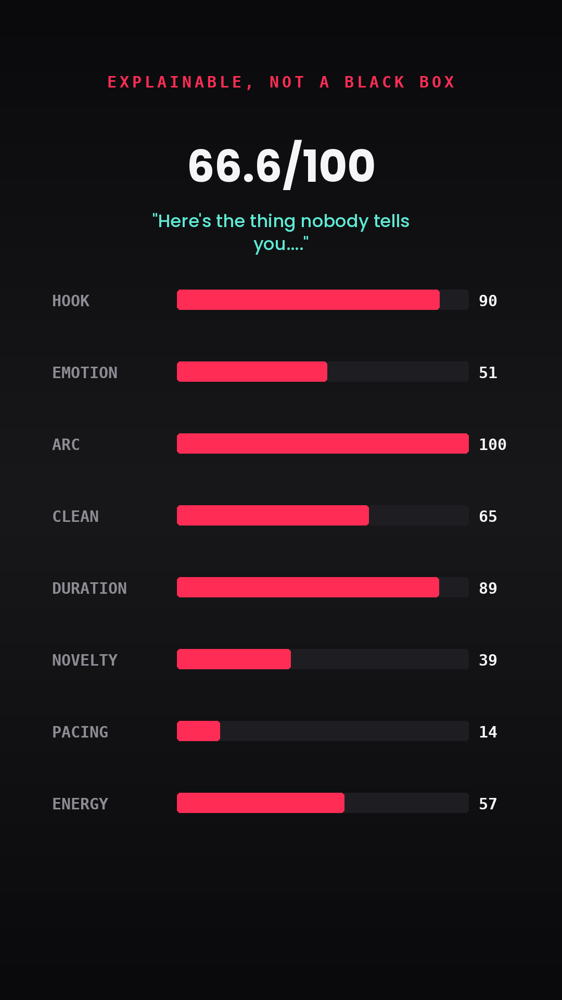
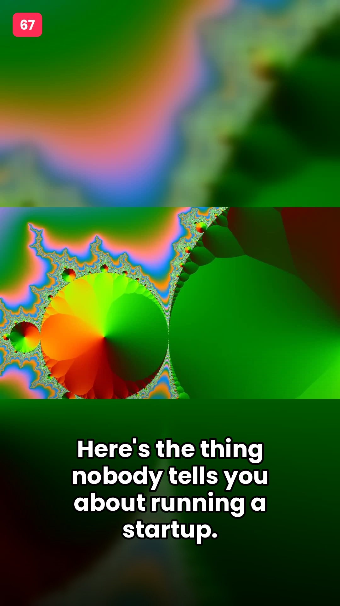
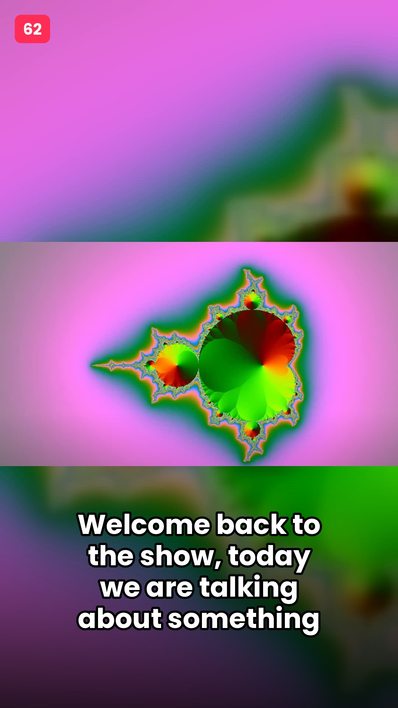

ClipRadar transcribes a podcast or YouTube video locally, scores every possible moment on 8 explainable signals, and hands back vertical clips — captioned, thumbnailed, titled — with a plain-English reason for every pick.
Transcription, 8-factor scoring, vertical reframing, burned captions, thumbnail generation, and metadata — every frame after the title cards is the actual tool's output, unedited.
60 minutes of footage.
Which 30 seconds actually hits?
One command in, a folder of ready-to-post clips out.
faster-whisper, word-level timestamps. No API key, no per-minute cost.
8 independent, inspectable signals combine into one explainable 0–100 score.
Blurred-fill vertical 9:16 render with word-synced pop-up captions burned in.
Titles, description, hashtags generated from the actual clip content.
Most auto-clip tools give you a pick with no reason attached. Every ClipRadar score ships with the exact factors that produced it — real signal computed from the transcript and audio, not an LLM's guess.

Clean source frame, bold hook-text overlay, score badge — pulled straight from the report.


Full pipeline verified end to end against a real rendered test case — transcription, scoring, vertical render, burned captions, thumbnail, report. Not a slide deck.
Most auto-clip tools are a black box or an LLM guess. ClipRadar's 8-factor scorer gives a defensible, inspectable reason for every pick.
Modular pipeline, single-pass ffmpeg filter graphs, no unnecessary heavyweight deps, graceful optional Claude enhancement that never blocks a demo.
Not just timestamps — vertical video, captions, thumbnail, title, description, and hashtags. The actual bottleneck (selection) is solved, not just cutting.